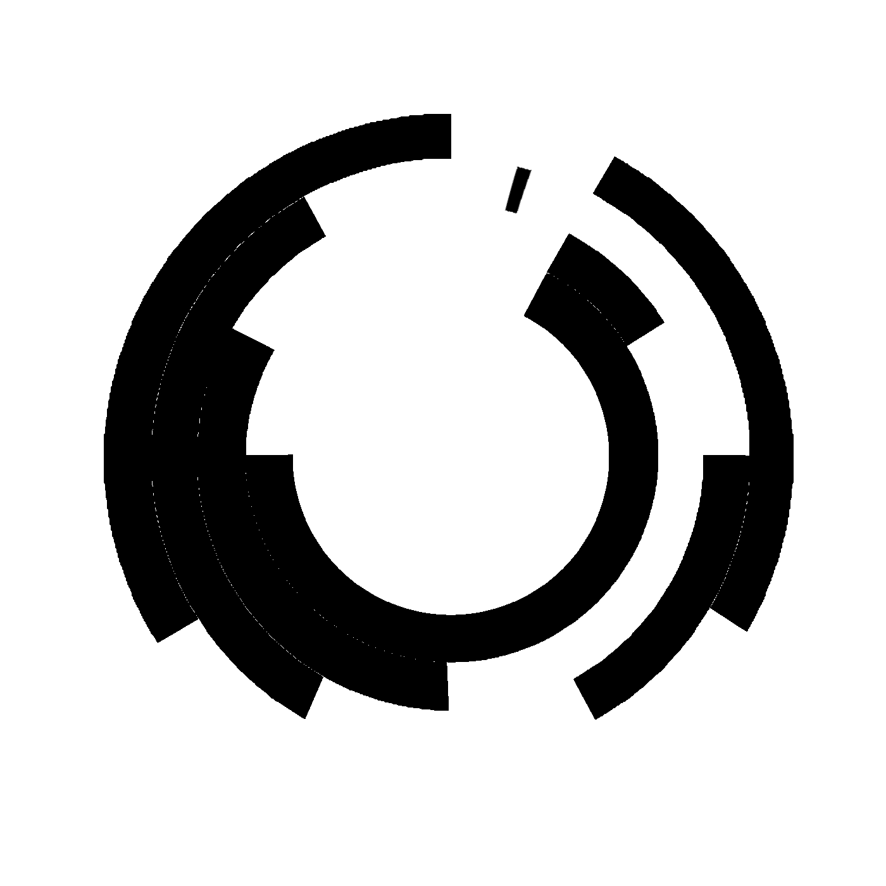

Our software system allows us to interpret the sensor data and use it to determine how to control the motors and addressable LEDs using the Adafruit Neopixel library and the Adafruit Motorshield library.
Arduino 1 code (bottom clocks):

Arduino 2 code (top clock):

Challenges:
We didn’t have enough money for a good quadrature encoder, and other solutions like potentiometers (are Gross and) don’t allow for full rotation. A stepper motor wasn’t a viable solution because while the stepper only knows its angular position correctly when not moved by an outside force.
{kind=link}
Our solution: we made our own cheap rotary encoder out of four IR reflectance sensors and a printed encoder sheet that we made in MS paint. Each 30° section of the encoder differs by one bit from both of the ones next to it (except the 11 and 12 positions), and the reflectance sensors each read a different bit from outside (0001) to inside (1000).
We also had some problems getting the code to figure out which order the IR distance sensors were triggered in. Our solution is a rather inelegant array-based series of if statements. When a sensor is triggered, we make that array component the sum of the other two sensor values plus one. This means that the lowest value in the array represents the sensor that was triggered first, and that when the sum of them is equal to 7 they have all been triggered. Then we use if statements as a switch case to figure out which way the motor should be rotating. Inelegant and inefficient, but effective!